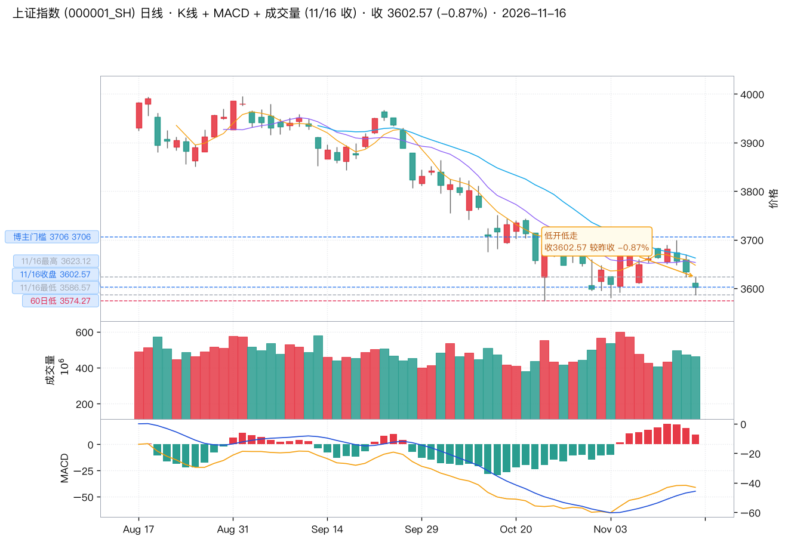
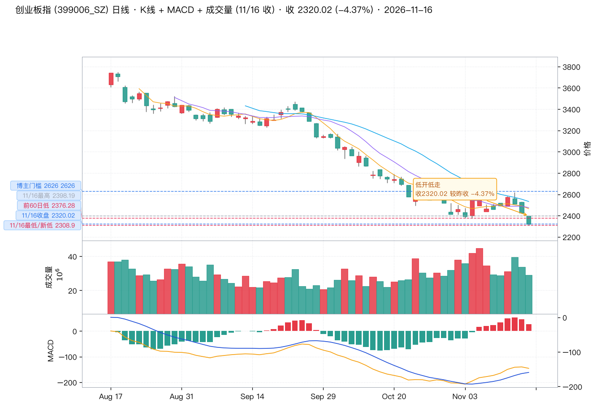
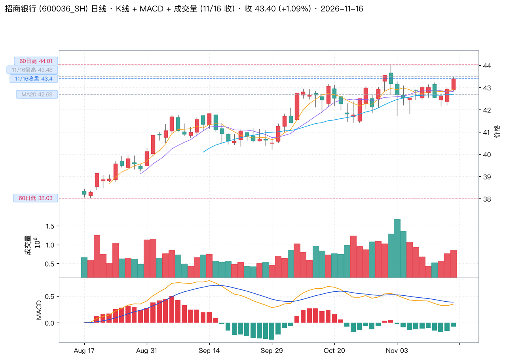
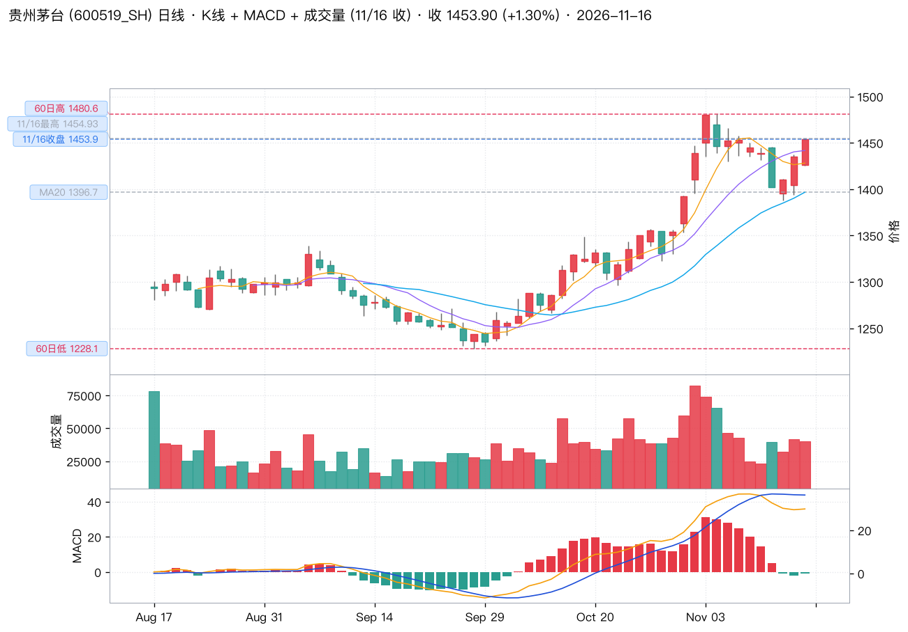
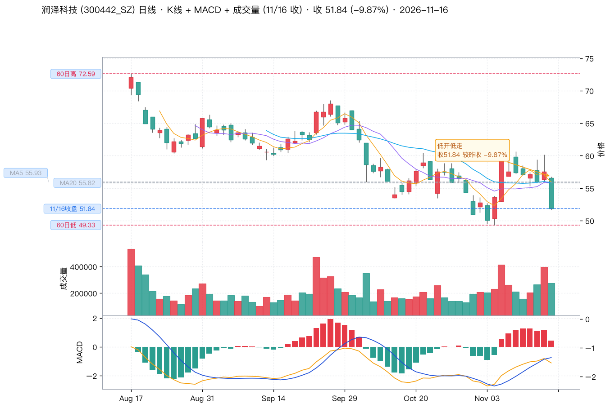

🟡 全天没有新买点 —— 13 条帖子里只有 2 条点名板块，其余是情绪安抚与事后归因。 10:31 回顾旧账（4256 撤离 / 4380 三川顶 / 第四大浪 ABC），12:53 唯一催化（DeepSeek 限额 → 算力租赁）， 14:39 唯一避险点名（银行股「唯一没有受这轮调整影响」），21:03 把跌停潮归为「泡沫破灭之后的事情」。 双门槛 3706 / 2626 全天未提（沪指已差 103.43 点、创业板差 305.98 点）—— 门槛不是被突破，是被搁置。只做银行 + 白酒，算力租赁先看不接。
| 时间 | 信号 | 原文 | 判读 / 日线实测 |
|---|---|---|---|
| 10:31 | ⚪ 旧账重宣 | 4256 撤离本金和一半盈利、4380 后构筑三川顶、提示科技股泡沫、第四大浪 ABC 调整 | 全是 6-7 月旧结论，本期无新增仓位/买点信息。互动 1.46 万，是全日第一热帖。 |
| 12:53 | 🟢 板块点名 + 催化 | #DeepSeek因算力不足限额# 利好算力，算力租赁！ | 全天唯一具名机会帖。实测算力租赁池 8/8 全跌、均值 −4.34%，龙头润泽科技 −9.87% 跌停 → 当日未兑现。 |
| 14:28 | 🟡 幅度统计 | 创业板自 4380 到今天 2314，跌 2066 点，跌幅 47.16% | 数字分毫不差：(4380−2314)/4380 = 47.17%。2314 为 14:28 盘中值。 |
| 14:39 | 🟢🟢 板块点名 | 以四大行和优质城商行为代表的银行股板块，是唯一没有受这轮大盘调整影响的板块 | 核验通过且是全市场最强方向：银行池 10/10 全涨、均值 +1.97%（浦发 +3.65%、农行 +2.99%）。 |
| 14:47 | 🟡 底部反问 | 创业板自 4380 到今天 2308，跌 2072 点，跌幅 47.30%。股市不是跌出机会吗？ | 数字对：(4380−2308)/4380 = 47.31%。是反问不是断言，不等于「买」。当日创业板最低 2308.90 正是 60 日新低。 |
| 14:51 | 🟡 计数 | 这次时间跨度比之前的大些，今天已经第 9 个交易了 | 核验通过：自 11/04 创业板见低 2376.28 起算，11/04-06、07、10、11、12、13、16 = 9 个交易日。 |
| 14:58 | ⚪ 情绪 | 今天不用评论，能互相安慰的都是好老铁！ | 当日互动第一（2.05 万），纯情绪帖，无操作信息。 |
| 21:03 | 🟡 事后归因 | #科技股现跌停潮不少股民爆仓# 这是泡沫破灭之后的事情！ | 核验通过：收盘跌停 174 家（11/13 是 81、11/12 是 19），三日 9 倍。定性=事后解释，不含前瞻信号。 |

开 3611.54 / 高 3623.12 / 低 3586.57 / 收 3602.57，低开低走。 3706 差 103.43 点（2.79%），连日内最高也差 82.88 点； 距 60 日低 3574.27 只剩 28.30 点（0.79%），MA20 3662.20 失守。

开 2395.52 / 高 2398.19 / 低 2308.90 / 收 2320.02。 2626 差 305.98 点（11.65%）；最低 2308.90 就是 60 日新低，前低 2376.28 已破； MACD 柱 26.98、DIF -145.8 / DEA -159.3 双双在零轴下方。
| 板块 | 11/16 收盘实测 | 博主口径 / 打法 |
|---|---|---|
| ① 银行 / 红利 首选 · 全市场最强 |
池 10 只 10 涨 0 跌，均值 +1.97%，额 232 亿 浦发 +3.65%、农行 +2.99%、工行 +2.26% |
14:39 唯一避险点名，核验通过。只做龙头、只做防守：招行站上 MA20 42.69，量比 137% 放量，60 日高 44.01 只差 0.61 点。 |
| ② 白酒 / 大消费 次选 · 防御轮动 |
池 5 只 5 涨 0 跌，均值 +0.92%，额 105 亿 茅台 +1.30%、汾酒 +1.20%、老窖 +1.04% |
与他 11/08「白酒+大消费泡沫」警示相反 —— 避险轮动，不是新主线。只做茅台、不做扩散：收 1453.90 站上 MA20 1396.70，距 60 日高 1480.60 仅 26.70 点。 |
| ③ 算力租赁 / IDC 观察位 · 当日未兑现 |
池 8 只 8 跌 0 涨，均值 -4.34%，额 31 亿 润泽科技 −9.87%（跌停）、首都在线 −4.96% |
12:53 唯一具名催化（DeepSeek 限额）—— 催化是真的，方向没走出来。不接：等龙头站回 MA20 55.82、跌停打开再谈。 |
| 代码 名称 | 收盘 | 涨跌 | 成交额 | 关键位 | 实测印证 / 动作 |
|---|---|---|---|---|---|
| 600036 招商银行 | 43.40 | +1.09% | 37.4 亿 | MA20 42.69 · 60 日高 44.01 | 大盘 −0.87% 下放量收红，量比 137%；MACD 零轴上方死叉（柱 -0.07，DIF 0.35 < DEA 0.39）= 强势回调。可分批，MA20 42.69 不破才加，破则走。 |
| 600519 贵州茅台 | 1453.90 | +1.30% | 57.7 亿 | MA20 1396.70 · 60 日高 1480.60 | 全市场仅此一池逆势（5/5 全涨）；量比 113%，距 60 日高仅 26.70 点。低吸不追高，MA20 1396.70 是防守位。 |
| 300442 润泽科技 | 51.84 | -9.87% | 14.8 亿 | MA20 55.82 · 60 日低 49.33 | 博主 12:53 唯一催化方向的龙头，今日跌停，已破 MA20 55.82；60 日低 49.33 只差 4.8%。观察不接，站回 MA20 再看。 |

高 43.48 / 低 42.85 / 收 43.40，放量小阳线站上 MA20 42.69；60 日高 44.01 是头顶第一道压制。

高 1454.93 / 低 1425.00 / 收 1453.90，逆势收红；MA20 1396.70 在下方支撑，60 日高 1480.60 距今 26.70 点。

开 56.55 / 高 56.78 / 低 51.70 / 收 51.84，跌停收盘；MA5 55.93、MA20 55.82 全在头上，60 日低 49.33 只差 4.8%。
| 项 | 博主口径 | 实测 / 处理 |
|---|---|---|
| 双门槛 3706 / 2626 状态变化 | 全天未提（11/13 还在强调「收复才有用」） | 沪指已差 103.43 点（2.79%）、创业板差 305.98 点（11.65%）。 门槛不是被突破，是被搁置 —— 别读成「他放弃了纪律」，也别读成「门槛自动作废」。 |
| 12:53 算力租赁 当日未兑现 | #DeepSeek因算力不足限额# 利好算力，算力租赁！ | 算力租赁池 8/8 全跌、均值 −4.34%，润泽科技 −9.87% 跌停。催化真实但当日被大盘压过 → 降级为观察位。 |
| 14:39「唯一」 不完全成立 | 银行股是唯一没有受这轮大盘调整影响的板块 | 银行 +1.97% 确实是第一，但白酒/大消费 5/5 全涨 +0.92% 同样未受影响 → 「唯一」不严谨，避险面比他说得宽。 |
| 10:31 长文 旧账重宣 | 4256 撤离 / 4380 三川顶 / 第四大浪 ABC | 全部是 6-7 月旧结论，本期无新增买点。当日互动第一（1.46 万）说明关注度在「情绪」不在「操作」。 |
| 口径相比 11/13 明显后退 | 11/13：C 杀尾段、分批承接 | 11/16 连「分批承接」都没再提，改为「互相安慰」「洗洗睡了」。操作口径从「分批接」退回「等」，本期不给方向。 |
免责声明：本报告为公开微博内容整理与技术面统计，不构成投资建议； 「3 板块 + 3 个股」是博主观点 + 实测强度的归纳，不代表推荐。股市有风险，投资需谨慎。
报告生成：2026-11-16 收盘版 · 数据源 weibo skill + Tushare Pro + 东方财富 ·
脚本 collect_daily_20261116.py / collect_extra_20261116.py /
make_wu2198_charts_20261116.py / gen_wu2198_report_20261116.py。